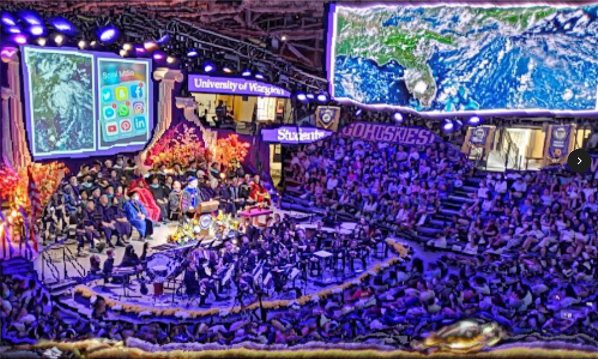

Projects
Campus Paths - Map GUI
This interactive map finds the shortest path between two buildings on UW campus,
but it can easily be transformed to fit any locational data set. It uses a Java backend and
a React front end. Reasoning through code,
writing specifications, using invariants, and
creating test cases were all exciting parts of the project.
Class Site
T&P - Thrifting Site
We've taken some key features of popular thrifting and shopping sites and recreated them! I really enjoyed working with a partner on a web project. This site uses HTML/CSS/JavaScript for the front end, node.js, and a SQLite database.
Flight App - Data Retrieval
What flights can take you from Seattle, WA to Boston, MA? This program, given a starting location and a destination, calculates both direct and indirect itineraries using SQL and produces them to users. I learned how to incorporate queries and transactions into backend code.
Portfolio - Web Development
Making this site has been an adventure! I had a lot of fun learning about mixing JavaScript,
HTML, and CSS elements in a project. I also learned about animating componenets,
web deployment, and hosting services. Fun fact - my portfolio used to be built
with React, and it looked completely different!
GitHub Repository
Seam Carving - Image Program
I've both completed and taught this Data Structures and Algorithms project in Java.
This project takes in an image and smaller dimensions, repeatedly finds horizontal and
vertical pixel seams to take out, and writes that image to a file. The algorithm creates
a graph and finds shortest paths using Dijkstra's algorithm and a priority queue,
which I also implemented with a heap.
Specification
Before: 904 X 1205
After: 500 X 300
Mazes - Graph GUI
This Java program generates a maze using disjoint sets to execute Kruskal's algorithm,
and it also solves the same maze using Dijkstra's algorithm. Users can also navigate
the maze themselves. I found the flexibility and ubiquity of graphs fascinating.
Specification
Integrating Wildfire Protection - Data Analysis
Completed for a data science class, I worked with two other classmates to create this
interactive page. We were curious about how the built environment affects human responses
to wildfire smoke. Our final site is published using Shiny, and we also published a version
using GitHub pages. We used R and markdown, and I enjoyed experimenting with different
visualization types and interactive charts.
Site - GitHub Pages
Site - Shiny
GitHub Repository
Incarceration Trends - Data Analysis
You can see my own work from a data science class in this project. This site is on
GitHub pages, and I used R and markdown. I spent a lot of time learning different
data wrangling techniques to find data trends. I spent additional time making the graph
visually appealing.
Site - GitHub Pages
GitHub Repository